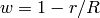

SmoothNeighbours dialog.
Table of Contents
Perform a moving-average smoothing by summing spectra of nearest neighbours over the face of detectors.
| Name | Direction | Type | Default | Description |
|---|---|---|---|---|
| InputWorkspace | Input | MatrixWorkspace | Mandatory | The workspace containing the spectra to be averaged. |
| OutputWorkspace | Output | MatrixWorkspace | Mandatory | The name of the workspace to be created as the output of the algorithm. |
| WeightedSum | Input | string | Flat | What sort of Weighting scheme to use? Flat: Effectively no-weighting, all weights are 1. Linear: Linear weighting 1 - r/R from origin. Parabolic : Weighting as cutoff - x + cutoff - y + 1. Gaussian : Uses the absolute distance x^2 + y^2 ... normalised by the cutoff^2. Allowed values: [‘Flat’, ‘Linear’, ‘Parabolic’, ‘Gaussian’] |
| Sigma | Input | number | 0.5 | Sigma value for gaussian weighting schemes. Defaults to 0.5. |
| IgnoreMaskedDetectors | Input | boolean | True | If true, do not consider masked detectors in the NN search. |
| PreserveEvents | Input | boolean | True | If the InputWorkspace is an EventWorkspace, this will preserve the full event list (warning: this will use much more memory!). |
| AdjX | Input | number | 1 | The number of X (horizontal) adjacent pixels to average together. Only for instruments with RectangularDetectors. |
| AdjY | Input | number | 1 | The number of Y (vertical) adjacent pixels to average together. Only for instruments with RectangularDetectors. |
| SumPixelsX | Input | number | 1 | The total number of X (horizontal) adjacent pixels to sum together. Only for instruments with RectangularDetectors. AdjX will be ignored if SumPixelsX > 1. |
| SumPixelsY | Input | number | 1 | The total number of Y (vertical) adjacent pixels to sum together. Only for instruments with RectangularDetectors. AdjY will be ignored if SumPixelsY > 1 |
| ZeroEdgePixels | Input | number | 0 | The number of pixels to zero at edges. Only for instruments with RectangularDetectors. |
| RadiusUnits | Input | string | Meters | Units used to specify the radius? Meters : Radius is in meters. NumberOfPixels : Radius is in terms of the number of pixels. Allowed values: [‘Meters’, ‘NumberOfPixels’] |
| Radius | Input | number | 0 | The radius around a pixel to look for nearest neighbours to average. If 0, will use the AdjX and AdjY parameters for rectangular detectors instead. |
| NumberOfNeighbours | Input | number | 8 | Number of nearest neighbouring pixels. Alternative to providing the radius. The default is 8. |
| SumNumberOfNeighbours | Input | number | 1 | Sum nearest neighbouring pixels with same parent. Number of pixels will be reduced. The default is false. |
| ExpandSumAllPixels | Input | boolean | False | OuputWorkspace will have same number of pixels as InputWorkspace using SumPixelsX and SumPixelsY. Individual pixels will have averages. |
This algorithm performs a moving-average smoothing of data by summing spectra of nearest neighbours over the face of detectors. The output workspace has the same number of spectra as the input workspace. This works on both EventWorkspaces and Workspace2D‘s. It has two main modes of operation.
You may either specify properties for the Rectangular Detector Group, or the Non-uniform Detector Group, but not both. If you provide inputs for the Rectangular Detector group, then the algorithm execution will assume that this is your desired processing route.
Going through the input workspace pixel-by-pixel, Mantid finds the nearest-neighbours with the given Radius of each pixel. The spectra are then summed together, and normalizing to unity (see the weighting section below).
The algorithm looks through the Instrument to find all the RectangularDetectors defined. For each pixel in each detector, the AdjX*AdjY neighboring spectra are summed together and saved in the output workspace.
A weighting strategy can be applied to control how the weights are calculated. This defaults to a flat weighting strategy. Weights are summed and scaled so that they add up to 1.
All weights are 1. This is completely position in-senitive.
Weights are calculated according to , where  is the
weighting factor,
is the
weighting factor,  is the distance from the detector and
is the distance from the detector and  is the
cut-off radius.
is the
cut-off radius.
For rectangular detectors it may be used as follows: The radius must be
zero and a AdjX and AdjY parameter must be provided.

For non-rectangular detectors, the cut-off radius is used in the
calculation. 
This weighting is calculated from the Gaussian distribution

where  and
and  is the number of
standard deviations controlling the width of the distribution curve
is the number of
standard deviations controlling the width of the distribution curve
Important notes about this algorithm are that:
Both methods of smoothing will significantly increase the memory usage of the workspace. For example, if AdjX=AdjY=1, the algorithm will sum 9 nearest neighbours in most cases. This increases the memory used by a factor of 9.
You can use PreserveEvents = false to avoid the memory issues with an EventWorkspace input. Please note that the algorithm does not check that the bin X boundaries match.
 |
 |
 |
 |
 |
| Fig. 1 | Fig. 2 | Fig. 3 | Fig. 4 | Fig. 5 |
Fig. 1:
Requesting NumberOfNeighbours=36, Radius=3. Algorithm looks for 36 nearest neighbours with a cut-off of 3 detector widths.
Fig. 2:
Requesting NumberOfNeighbours=46, Radius=2. Algorithm looks for 46 nearest neighbours with a cut-off of 2 detector widths.
Fig. 3:
Requesting NumberOfNeighbours=56, Radius=3. Algorithm looks for 56 nearest neighbours with a cut-off of 3 detector widths.
Fig. 4:
Requesting NumberOfNeighbours=8, Radius=3. Algorithm looks for 8 nearest neighbours with a cut-off of 3 detector widths.
Fig. 5:
Requesting AdjX=4, AdjY=2, Radius=0. Algorithm fetches neighbours in the specified pattern.
The algorithm will fetch neigbours using the intesection of those inside the radius cut-off and those less than the NumberOfNeighbours specified. Fig. 1 illustrates this process. Searching is relative to the central detector, those constrained by both specified number of neighbours have been highlighted. In this case the radius cut-off and the number of neighbours constrain the same number of detectors.
Searching via the number of neighbours will not necessarily return the neighbours in a grid with the same number of detectors in each axis. Fig. 2 shows how neighbours might be returned if distances are non-uniform. If RectangularDetectors are available, you may force the searching to occur in rectangular manner (described below).
The SmoothingNeighbours algorithm will only take those neighbours which are in the intersection between those constrained by the cut-off and those constrained by the specified number of neighbours. If the radius cut-off is the limiting factor, then those neighbours outside will not be considered. This is illustrated in Fig. 3 where the blue detectors will not be considered, but will not with this radius cut-off, while the green ones will. Likewise, in Fig. 4 the effect of reducing the NumberOfNeighbours property can be seen.
If the radius is set to 0, the instrument is treated as though it has rectangular detectors. AdjX and AdjY can then be used to control the number of neighbours independently in x and y using the AdjX and AdjY properties. Fig. 5 Shows the effect of this type of searching.
The algorithm will ignore masked detectors if this flag is set.
Example - Smooth using radius:
# Create a workspace with a single rectangular bank of size 3x3. One bin only.
ws = CreateSampleWorkspace(Function="Flat background",
NumBanks=1,
BankPixelWidth=3,
XMin=0,
XMax=1,
BinWidth=1)
# Initial values
values = [1.0, 1.0, 3.0,
4.0, 2.0, 2.0,
1.0, 3.0, 3.0]
for i in range(0,9):
ws.dataY(i)[0] = values[i]
# Run the algorithm
output = SmoothNeighbours(ws, Radius = 1.0,
RadiusUnits = 'NumberOfPixels')
print 'Number of histograms:', output.getNumberHistograms()
print 'Smoothed values:'
print output.extractY()
Output:
Number of histograms: 9
Smoothed values:
[[ 2. ]
[ 2.16666667]
[ 2. ]
[ 2. ]
[ 2.22222222]
[ 2.33333333]
[ 2.5 ]
[ 2.5 ]
[ 2.5 ]]
Example - Smooth using AdjX and AdjY:
# Create a workspace with a single rectangular bank of size 3x3. One bin only.
ws = CreateSampleWorkspace(Function="Flat background",
NumBanks=1,
BankPixelWidth=3,
XMin=0,
XMax=1,
BinWidth=1)
# Initial values
values = [1.0, 1.0, 3.0,
4.0, 2.0, 2.0,
1.0, 3.0, 3.0]
for i in range(0,9):
ws.dataY(i)[0] = values[i]
# Run the algorithm
output = SmoothNeighbours(ws, AdjX=1, AdjY=3)
print 'Number of histograms:', output.getNumberHistograms()
print 'Smoothed values:'
print output.extractY()
Output:
Number of histograms: 9
Smoothed values:
[[ 2.16666667]
[ 2.16666667]
[ 2.16666667]
[ 2.22222222]
[ 2.22222222]
[ 2.22222222]
[ 2.5 ]
[ 2.5 ]
[ 2.5 ]]
Example - Smooth and sum using SumPixelsX and SumPixelsY:
# Create a workspace with a single rectangular bank of size 3x3. One bin only.
ws = CreateSampleWorkspace(Function="Flat background",
NumBanks=1,
BankPixelWidth=3,
XMin=0,
XMax=1,
BinWidth=1)
# Initial values
values = [1.0, 1.0, 3.0,
4.0, 2.0, 2.0,
1.0, 3.0, 3.0]
for i in range(0,9):
ws.dataY(i)[0] = values[i]
# Run the algorithm
output = SmoothNeighbours(ws, SumPixelsX=3, SumPixelsY=1)
print 'Number of histograms:', output.getNumberHistograms()
print 'Smoothed values:'
print output.extractY()
Output:
Number of histograms: 3
Smoothed values:
[[ 6.]
[ 6.]
[ 8.]]
Categories: Algorithms | Transforms\Smoothing
{kind=link}